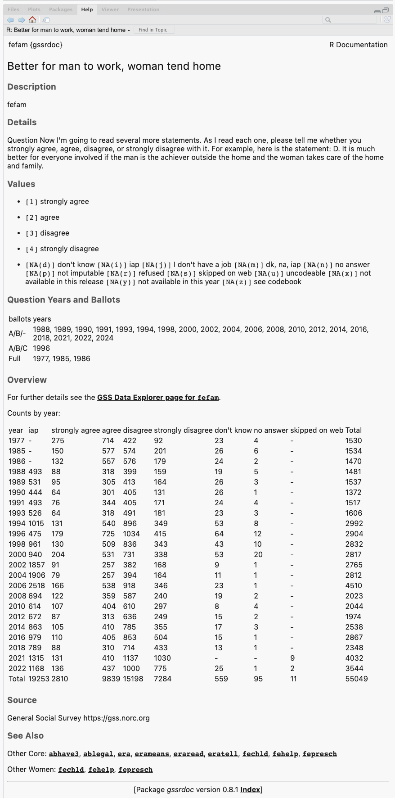

The General Social Survey Cumulative Data (1972-2022, release 2a) and Panel Data files packaged for easy use in R. The companion package to gssr is {gssrdoc}, which integrates the GSS codebook into R’s help system. I recommend you install both packages.

Installation
gssr is a data package, bundling several datasets into a convenient format. The relatively large size of the data in the package means it is not suitable for hosting on CRAN, the core R package repository. The same is true of {gssrdoc}.
Install via R-Universe
My R Universe provides binary packages for gssr and {gssrdoc}. To install both packages, copy and paste the following code to the R console:
# Install 'gssr' from 'ropensci' universe
install.packages('gssr', repos =
c('https://kjhealy.r-universe.dev', 'https://cloud.r-project.org'))
# Also recommended: install 'gssrdoc' as well
install.packages('gssrdoc', repos =
c('https://kjhealy.r-universe.dev', 'https://cloud.r-project.org'))The binary packages will install noticeably quicker than building the package from source. Plus, you can use install.packages() directly. To install gssr this way, c
(Because the packages have dependencies that are on CRAN, we add CRAN as well as the R Universe to the repos argument.)
Install direct from GitHub
You can also install gssr from GitHub with:
remotes::install_github("kjhealy/gssr")Loading the data
library(gssr)
#> Package loaded. To attach the GSS data, type data(gss_all) at the console.
#> For the codebook, type data(gss_dict).
#> For the panel data and documentation, type e.g. data(gss_panel08_long) and data(gss_panel_doc).
#> For help on a specific GSS variable, type ?varname at the console.Single GSS years
You can get the data for any single GSS year by using gss_get_yr() to download it from NORC and put it directly into a tibble.
gss18 <- gss_get_yr(2018)
#> Fetching: https://gss.norc.org/documents/stata/2018_stata.zip
gss18
#> # A tibble: 2,348 × 1,068
#> year id wrkstat hrs1 hrs2 evwork wrkslf wrkgovt
#> <dbl+lbl> <dbl> <dbl+lbl> <dbl+lbl> <dbl+lbl> <dbl+lbl> <dbl+l> <dbl+l>
#> 1 2018 1 3 [with … NA(i) [iap] 41 NA(i) [iap] 2 [som… 2 [pri…
#> 2 2018 2 5 [retir… NA(i) [iap] NA(i) [iap] 1 [yes] 2 [som… 2 [pri…
#> 3 2018 3 1 [worki… 40 NA(i) [iap] NA(i) [iap] 2 [som… 2 [pri…
#> 4 2018 4 1 [worki… 40 NA(i) [iap] NA(i) [iap] 2 [som… 2 [pri…
#> 5 2018 5 5 [retir… NA(i) [iap] NA(i) [iap] 1 [yes] 2 [som… 2 [pri…
#> 6 2018 6 5 [retir… NA(i) [iap] NA(i) [iap] 1 [yes] 2 [som… 2 [pri…
#> 7 2018 7 1 [worki… 35 NA(i) [iap] NA(i) [iap] 2 [som… 1 [gov…
#> 8 2018 8 1 [worki… 89 [89+… NA(i) [iap] NA(i) [iap] 2 [som… 2 [pri…
#> 9 2018 9 1 [worki… 40 NA(i) [iap] NA(i) [iap] 1 [sel… 2 [pri…
#> 10 2018 10 1 [worki… 40 NA(i) [iap] NA(i) [iap] 2 [som… 2 [pri…
#> # ℹ 2,338 more rows
#> # ℹ 1,060 more variables: occ10 <dbl+lbl>, prestg10 <dbl+lbl>,
#> # prestg105plus <dbl+lbl>, indus10 <dbl+lbl>, marital <dbl+lbl>,
#> # martype <dbl+lbl>, divorce <dbl+lbl>, widowed <dbl+lbl>,
#> # spwrksta <dbl+lbl>, sphrs1 <dbl+lbl>, sphrs2 <dbl+lbl>, spevwork <dbl+lbl>,
#> # cowrksta <dbl+lbl>, cowrkslf <dbl+lbl>, coevwork <dbl+lbl>,
#> # cohrs1 <dbl+lbl>, cohrs2 <dbl+lbl>, spwrkslf <dbl+lbl>, …The Cumulative Data File
The GSS cumulative data file is large. It is included ingssr but not loaded by default when you invoke the package. (That is, gssr does not use R’s “lazy loading” facility. The data file is too big to do this without error.) To load it (or the other) datasets, first load the library and then use data() to make the data available. For example, load the cumulative GSS file like this:
data(gss_all)This will take a moment. Once it is ready, the gss_all object is available to use in the usual way:
gss_all
#> # A tibble: 72,390 × 6,694
#> year id wrkstat hrs1 hrs2 evwork occ prestige
#> <dbl+lbl> <dbl> <dbl+lbl> <dbl+lbl> <dbl+lbl> <dbl+lbl> <dbl> <dbl+lb>
#> 1 1972 1 1 [workin… NA(i) [iap] NA(i) [iap] NA(i) [iap] 205 50
#> 2 1972 2 5 [retire… NA(i) [iap] NA(i) [iap] 1 [yes] 441 45
#> 3 1972 3 2 [workin… NA(i) [iap] NA(i) [iap] NA(i) [iap] 270 44
#> 4 1972 4 1 [workin… NA(i) [iap] NA(i) [iap] NA(i) [iap] 1 57
#> 5 1972 5 7 [keepin… NA(i) [iap] NA(i) [iap] 1 [yes] 385 40
#> 6 1972 6 1 [workin… NA(i) [iap] NA(i) [iap] NA(i) [iap] 281 49
#> 7 1972 7 1 [workin… NA(i) [iap] NA(i) [iap] NA(i) [iap] 522 41
#> 8 1972 8 1 [workin… NA(i) [iap] NA(i) [iap] NA(i) [iap] 314 36
#> 9 1972 9 2 [workin… NA(i) [iap] NA(i) [iap] NA(i) [iap] 912 26
#> 10 1972 10 1 [workin… NA(i) [iap] NA(i) [iap] NA(i) [iap] 984 18
#> # ℹ 72,380 more rows
#> # ℹ 6,686 more variables: wrkslf <dbl+lbl>, wrkgovt <dbl+lbl>,
#> # commute <dbl+lbl>, industry <dbl+lbl>, occ80 <dbl+lbl>, prestg80 <dbl+lbl>,
#> # indus80 <dbl+lbl>, indus07 <dbl+lbl>, occonet <dbl+lbl>, found <dbl+lbl>,
#> # occ10 <dbl+lbl>, occindv <dbl+lbl>, occstatus <dbl+lbl>, occtag <dbl+lbl>,
#> # prestg10 <dbl+lbl>, prestg105plus <dbl+lbl>, indus10 <dbl+lbl>,
#> # indstatus <dbl+lbl>, indtag <dbl+lbl>, marital <dbl+lbl>, …Integrated Help
Beginning with version 0.4, gssr provides documentation for all GSS variables in the cumulative data file via R’s help system. You can browse variables by name in the package’s help file or type ? followed by the name of the variable at the console to get a standard R help page containing information on the variable, the values it takes and (in most cases) a crosstabulation of the variable’s values for each year of the GSS. This facility is particularly convenient in an IDE such as RStudio or Microsoft Visual Studio.

Which questions were asked in which years?
We often want to know which years a question or group of questions was asked. We can find this out for one or more variables with gss_which_years().
gss_which_years(gss_all, fefam)
#> # A tibble: 33 x 2
#> year fefam
#> <dbl> <lgl>
#> 1 1972 FALSE
#> 2 1973 FALSE
#> 3 1974 FALSE
#> 4 1975 FALSE
#> 5 1976 FALSE
#> 6 1977 TRUE
#> 7 1978 FALSE
#> 8 1980 FALSE
#> 9 1982 FALSE
#> 10 1983 FALSE
#> # … with 24 more rows
When querying more than one variable, use c():
gss_all |>
gss_which_years(c(industry, indus80, wrkgovt, commute)) |>
print(n = Inf)
## # A tibble: 34 × 5
## year industry indus80 wrkgovt commute
## <dbl+lbl> <lgl> <lgl> <lgl> <lgl>
## 1 1972 TRUE FALSE FALSE FALSE
## 2 1973 TRUE FALSE FALSE FALSE
## 3 1974 TRUE FALSE FALSE FALSE
## 4 1975 TRUE FALSE FALSE FALSE
## 5 1976 TRUE FALSE FALSE FALSE
## 6 1977 TRUE FALSE FALSE FALSE
## 7 1978 TRUE FALSE FALSE FALSE
## 8 1980 TRUE FALSE FALSE FALSE
## 9 1982 TRUE FALSE FALSE FALSE
## 10 1983 TRUE FALSE FALSE FALSE
## 11 1984 TRUE FALSE FALSE FALSE
## 12 1985 TRUE FALSE TRUE FALSE
## 13 1986 TRUE FALSE TRUE TRUE
## 14 1987 TRUE FALSE FALSE FALSE
## 15 1988 TRUE TRUE FALSE FALSE
## 16 1989 TRUE TRUE FALSE FALSE
## 17 1990 TRUE TRUE FALSE FALSE
## 18 1991 FALSE TRUE FALSE FALSE
## 19 1993 FALSE TRUE FALSE FALSE
## 20 1994 FALSE TRUE FALSE FALSE
## 21 1996 FALSE TRUE FALSE FALSE
## 22 1998 FALSE TRUE FALSE FALSE
## 23 2000 FALSE TRUE TRUE FALSE
## 24 2002 FALSE TRUE TRUE FALSE
## 25 2004 FALSE TRUE TRUE FALSE
## 26 2006 FALSE TRUE TRUE FALSE
## 27 2008 FALSE TRUE TRUE FALSE
## 28 2010 FALSE TRUE TRUE FALSE
## 29 2012 FALSE FALSE TRUE FALSE
## 30 2014 FALSE FALSE TRUE FALSE
## 31 2016 FALSE FALSE TRUE FALSE
## 32 2018 FALSE FALSE TRUE FALSE
## 33 2021 FALSE FALSE FALSE FALSE
## 34 2022 FALSE FALSE FALSE FALSE Panel data
In addition to the Cumulative Data File, the gssr package also includes the GSS’s panel data. The current rotating panel design began in 2006. A panel of respondents were interviewed that year and followed up on for further interviews in 2008 and 2010. A second panel was interviewed beginning in 2008, and was followed up on for further interviews in 2010 and 2012. And a third panel began in 2010, with follow-up interviews in 2012 and 2014. The gssr package provides three datasets, one for each of three-wave panels. They are gss_panel06_long, gss_panel08_long, and gss_panel10_long. The datasets are provided by the GSS in wide format but (as their names suggest) they are packaged here in long format. The 2020 panel is an exception to this, for reasons described below. The conversion was carried out using the panelr package and its long_panel() function. Conversion from long back to wide format is possible with the tools provided in panelr.
The panel data objects must be loaded in the same way as the cumulative data file, using data().
data("gss_panel06_long")
gss_panel06_long
#> # A tibble: 6,000 × 1,572
#> firstid wave ballot form formwt oversamp sampcode sample samptype
#> <fct> <dbl> <dbl+lbl> <dbl+l> <dbl> <dbl> <dbl+lb> <dbl+l> <dbl+lbl>
#> 1 9 1 3 [BALLOT … 2 [ALT… 1 1 501 9 [200… 2006 [200…
#> 2 9 2 3 [BALLOT … 2 [ALT… 1 1 501 9 [200… 2006 [200…
#> 3 9 3 3 [BALLOT … 2 [ALT… 1 1 501 9 [200… 2006 [200…
#> 4 10 1 1 [BALLOT … 1 [STA… 1 1 501 9 [200… 2006 [200…
#> 5 10 2 1 [BALLOT … 1 [STA… 1 1 501 9 [200… 2006 [200…
#> 6 10 3 1 [BALLOT … 1 [STA… 1 1 501 9 [200… 2006 [200…
#> 7 11 1 3 [BALLOT … 2 [ALT… 1 1 501 9 [200… 2006 [200…
#> 8 11 2 3 [BALLOT … 2 [ALT… 1 1 501 9 [200… 2006 [200…
#> 9 11 3 3 [BALLOT … 2 [ALT… 1 1 501 9 [200… 2006 [200…
#> 10 12 1 1 [BALLOT … 2 [ALT… 1 1 501 9 [200… 2006 [200…
#> # ℹ 5,990 more rows
#> # ℹ 1,563 more variables: vstrat <dbl+lbl>, vpsu <dbl+lbl>, wtpan12 <dbl+lbl>,
#> # wtpan123 <dbl+lbl>, wtpannr12 <dbl+lbl>, wtpannr123 <dbl+lbl>,
#> # letin1a <dbl+lbl>, abany <dbl+lbl>, abdefect <dbl+lbl>, abhlth <dbl+lbl>,
#> # abnomore <dbl+lbl>, abpoor <dbl+lbl>, abrape <dbl+lbl>, absingle <dbl+lbl>,
#> # accntsci <dbl+lbl>, acqasian <dbl+lbl>, acqattnd <dbl+lbl>,
#> # acqblack <dbl+lbl>, acqbrnda <dbl+lbl>, acqchild <dbl+lbl>, …Panel data objects are regular tibbles. You do not need to use panelr to work with the data.
The column names in long format do not have wave identifiers. Rather, firstid and wave variables track the cases. The firstid variable is unique for every respondent in the panel and has no missing values. The wave variable indexes responses from a given firstid panelist in each wave (if observed). The id variable is from the GSS and indexes individuals within waves.
data("gss_panel08_long")
gss_panel08_long |>
select(firstid, wave, id, sex)
#> # A tibble: 6,069 × 4
#> firstid wave id sex
#> <fct> <dbl> <dbl+lbl> <dbl+lbl>
#> 1 1 1 1 1 [MALE]
#> 2 1 2 8001 1 [MALE]
#> 3 1 3 NA NA
#> 4 2 1 2 1 [MALE]
#> 5 2 2 8002 1 [MALE]
#> 6 2 3 8001 1 [MALE]
#> 7 3 1 3 1 [MALE]
#> 8 3 2 8003 1 [MALE]
#> 9 3 3 8002 1 [MALE]
#> 10 4 1 4 1 [MALE]
#> # ℹ 6,059 more rowsWe can look at attrition across waves with, e.g.:
The 2020 Panel Data
The COVID-19 pandemic also affected the panel data design. In 2020, the GSS was run as two studies; namely, (1) a panel re-interview of past respondents from the 2016 and 2018 cross sectional GSS studies (referred to as the 2016-2020 GSS Panel), and (2) an independent fresh cross-sectional address-based sampling push to web study (referred to as 2020 cross-sectional survey). The gssr package provides the data for the first study as gss_panel20. This study empaneled former 2016 and 2018 GSS respondents to answer a GSS questionnaire in 2020 (i.e., the 2016-2020 GSS panel). In the 2016-2020 GSS Panel, variables only contain data from one of the three years. To differentiate between versions of each variable, they have been appended with suffixes. Variables from 2016 (Wave 1a) have _1a appended, variables from 2018 (Wave 1b) have _1b appended, and variables from 2020 (Wave 2) have _2 appended. Users can also track cases from 2016 and 2018, and reinterviews from 2020 with the variable samptype.
data("gss_panel20")
gss_panel20
#> # A tibble: 5,215 × 4,296
#> samptype yearid fileversion panstat wtssall_1a wtssall_1b wtssall_2
#> <dbl+lbl> <chr> <chr> <dbl+l> <dbl> <dbl> <dbl>
#> 1 2016 [sample from… 20160… GSS 2020 P… 1 [sel… 0.957 NA 1.09
#> 2 2016 [sample from… 20160… GSS 2020 P… 1 [sel… 0.478 NA 0.543
#> 3 2016 [sample from… 20160… GSS 2020 P… 0 [not… 0.957 NA NA
#> 4 2016 [sample from… 20160… GSS 2020 P… 1 [sel… 1.91 NA 2.17
#> 5 2016 [sample from… 20160… GSS 2020 P… 0 [not… 1.44 NA NA
#> 6 2016 [sample from… 20160… GSS 2020 P… 2 [sel… 0.957 NA NA
#> 7 2016 [sample from… 20160… GSS 2020 P… 0 [not… 1.44 NA NA
#> 8 2016 [sample from… 20160… GSS 2020 P… 1 [sel… 0.957 NA 1.09
#> 9 2016 [sample from… 20160… GSS 2020 P… 1 [sel… 0.957 NA 1.09
#> 10 2016 [sample from… 20160… GSS 2020 P… 0 [not… 0.957 NA NA
#> # ℹ 5,205 more rows
#> # ℹ 4,289 more variables: wtssnr_1a <dbl>, wtssnr_1b <dbl>, wtssnr_2 <dbl>,
#> # vstrat_1a <dbl>, vstrat_1b <dbl>, vstrat_2 <dbl>, vpsu_1a <dbl>,
#> # vpsu_1b <dbl>, vpsu_2 <dbl>, year_1a <int>, year_1b <int>, year_2 <int>,
#> # id_1a <dbl>, id_1b <dbl>, id_2 <dbl>, mar1_1a <dbl+lbl>, mar2_1a <dbl+lbl>,
#> # mar3_1a <dbl+lbl>, mar4_1a <dbl+lbl>, mar5_1a <dbl+lbl>, mar6_1a <dbl+lbl>,
#> # mar7_1a <dbl+lbl>, mar8_1a <dbl+lbl>, mar9_1a <dbl+lbl>, …Unlike the other panels, these data are provided in wide format. Users are strongly encouraged to read the official documentation at the NORC website.
The GSS and COVID-19
The GSS administrators have released a Methodological Primer along with the Documentation and Codebook for the 2021 survey that users should read carefully in connection with the effects of COVID-19 on data collection for the GSS.
The Primer notes:
Since its inception, the GSS has conducted data collection via in-person interviews as its primary mode of data collection. The pandemic forced the GSS to change this design, moving from in-person to address- based sampling and a push-to-web methodology, with the bulk of the interview conducted online via a self- administered questionnaire.
In addition,
We recommend our users include the one of the following statements when reporting on the GSS 2021 Cross-section data: Total Survey Error Summary Perspective for the 2021 GSS Cross-section: Changes in opinions, attitudes, and behaviors observed in 2021 relative to historical trends may be due to actual change in concept over time and/or may have resulted from methodological changes made to the survey methodology during the COVID-19 global pandemic.
And,
Suggested Statement to Include in Articles and Reports That Use GSS Data: To safeguard the health of staff and respondents during the COVID-19 pandemic, the 2021 GSS data collection used a mail-to-web methodology instead of its traditional in-person interviews. Research and interpretation done using the data should take extra care to ensure the analysis reflects actual changes in public opinion and is not unduly influenced by the change in data collection methods. For more information on the 2021 GSS methodology and its implications, please visit https://gss.norc.org/Get-The-Data
Further details
The package is documented at http://kjhealy.github.io/gssr/. The GSS homepage is at http://gss.norc.org/. While the gssr package incorporates the publicly-available GSS cumulative data file, this package is not associated with or endorsed by the National Opinion Research Center or the General Social Survey.